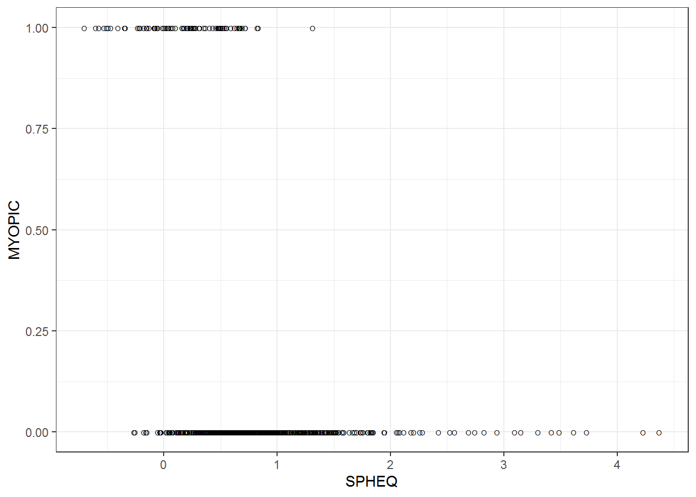
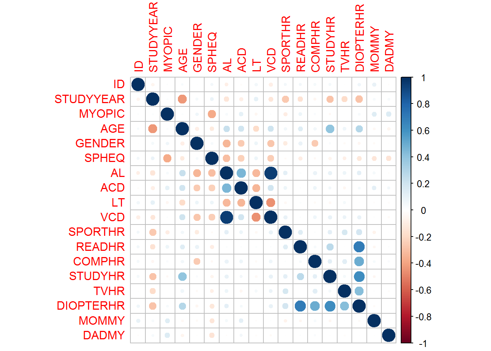

第 2 章 数据
2.1 数据集简介
该数据集是来自 Orinda 近视纵向研究 (OLSM) 的数据子集，这是一项眼科队列研究儿童近视发病的成分发育和危险因素。 数据收集始于 1989-1990 年学年，并每年持续到 2000-2001 学年。 有关构成眼睛的部分的所有数据（眼部成分）是在上学期间的一次考试中收集的。 家族史数据和在家长或监护人完成的一项调查中，每年都会收集视觉活动。
本文中使用的数据集来自 618 名至少接受五年随访且非近视的受试者 当他们进入队列时， 所有数据都来自他们的初始检查，数据集包括 17 个变量。 此外眼睛数据有关于进入年龄，进入年份，近视家族史和各种视觉小时数的信息活动。 眼部数据来自受试者的右眼。
data <- read.csv('myopia.csv')
library(knitr)
knitr::kable(head(data)) | ID | STUDYYEAR | MYOPIC | AGE | GENDER | SPHEQ | AL | ACD | LT | VCD | SPORTHR | READHR | COMPHR | STUDYHR | TVHR | DIOPTERHR | MOMMY | DADMY |
|---|---|---|---|---|---|---|---|---|---|---|---|---|---|---|---|---|---|
| 1 | 1992 | 1 | 6 | 1 | -0.052 | 21.89 | 3.690 | 3.498 | 14.70 | 45 | 8 | 0 | 0 | 10 | 34 | 1 | 1 |
| 2 | 1995 | 0 | 6 | 1 | 0.608 | 22.38 | 3.702 | 3.392 | 15.29 | 4 | 0 | 1 | 1 | 7 | 12 | 1 | 1 |
| 3 | 1991 | 0 | 6 | 1 | 1.179 | 22.49 | 3.462 | 3.514 | 15.52 | 14 | 0 | 2 | 0 | 10 | 14 | 0 | 0 |
| 4 | 1990 | 1 | 6 | 1 | 0.525 | 22.20 | 3.862 | 3.612 | 14.73 | 18 | 11 | 0 | 0 | 4 | 37 | 0 | 1 |
| 5 | 1995 | 0 | 5 | 0 | 0.697 | 23.29 | 3.676 | 3.454 | 16.16 | 14 | 0 | 0 | 0 | 4 | 4 | 1 | 0 |
| 6 | 1995 | 0 | 6 | 0 | 1.744 | 22.14 | 3.224 | 3.556 | 15.36 | 10 | 6 | 2 | 1 | 19 | 44 | 0 | 1 |
2.2 用SPHEQ预测近视
library(tidyverse)## Warning: replacing previous import 'lifecycle::last_warnings' by
## 'rlang::last_warnings' when loading 'pillar'## Warning: replacing previous import 'lifecycle::last_warnings' by
## 'rlang::last_warnings' when loading 'hms'## -- Attaching packages --------------------------------------- tidyverse 1.3.1 --## v ggplot2 3.3.5 v purrr 0.3.4
## v tibble 3.1.7 v dplyr 1.0.7
## v tidyr 1.1.3 v stringr 1.4.0
## v readr 2.0.1 v forcats 0.5.1## Warning: 程辑包'tibble'是用R版本4.1.3 来建造的## -- Conflicts ------------------------------------------ tidyverse_conflicts() --
## x dplyr::filter() masks stats::filter()
## x dplyr::lag() masks stats::lag()data %>%
ggplot(.,aes(x=SPHEQ,y=MYOPIC))+
geom_jitter(shape="O",position = position_jitter(height = 0))+
theme_bw()
在这种情况下，“SPHEQ”显然会影响近视的存在，但不足以准确预测。 需要向模型添加更多属性以改进 预测。 为此，需要检查每个属性与近视存在之间的相关性。
2.3 绘制所有变量之间的相关性
library(corrplot)## Warning: 程辑包'corrplot'是用R版本4.1.2 来建造的## corrplot 0.92 loadedcorrplot.mixed(cor(data))
corrplot(cor(data)) 很明显，例如“DIOPTERHR”与“SPORTHR”、“TVHR”、“STUDYHR”、“COMPHR”和“READHR”高度相关。因此，“DIOPTERHR”变量不会包含在预测模型中 为了防止共线性问题
2.4 变量与近视之间的相关性
再来看每个属性与近视的关联性如何
library(corrplot)
correlations <- cor(data)
pcor <- correlations[,3] %>%
print()## ID STUDYYEAR MYOPIC AGE GENDER SPHEQ
## 0.012242256 0.016330987 1.000000000 0.018525875 0.061556801 -0.373639054
## AL ACD LT VCD SPORTHR READHR
## 0.037752311 0.107952757 -0.045704451 0.011854862 -0.098282028 0.072749265
## COMPHR STUDYHR TVHR DIOPTERHR MOMMY DADMY
## 0.025874323 -0.031858867 -0.004032443 0.036983991 0.134032827 0.149896423 # corrplot(correlations)根据图中与近视高度相关的属性是“SPHEQ”、“ACD”、“MOMMY”、“DADMY”、“SPORTHR”、“READHR”、“GENDER”。